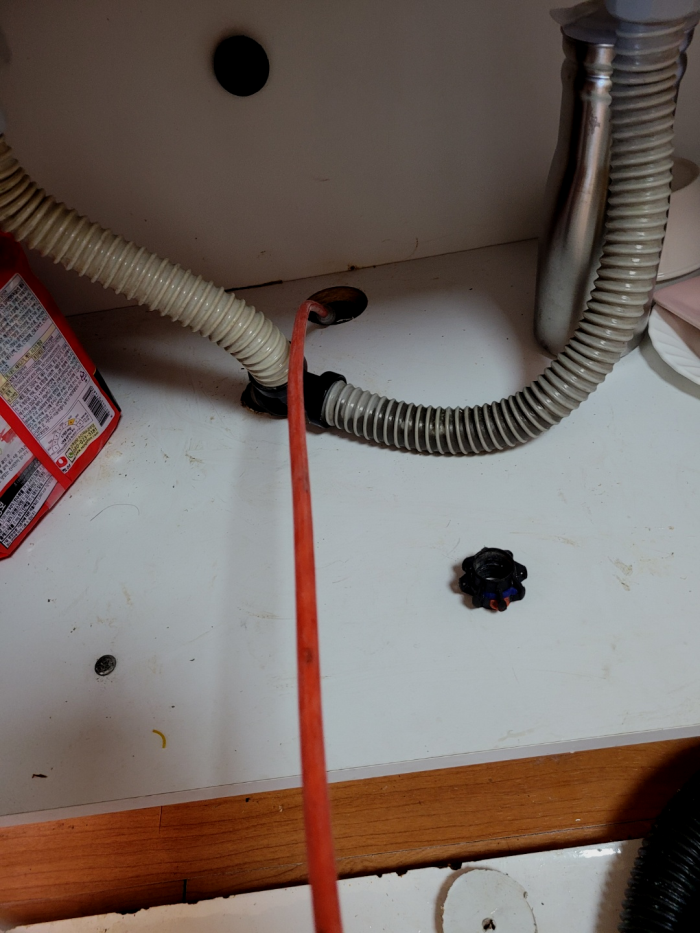
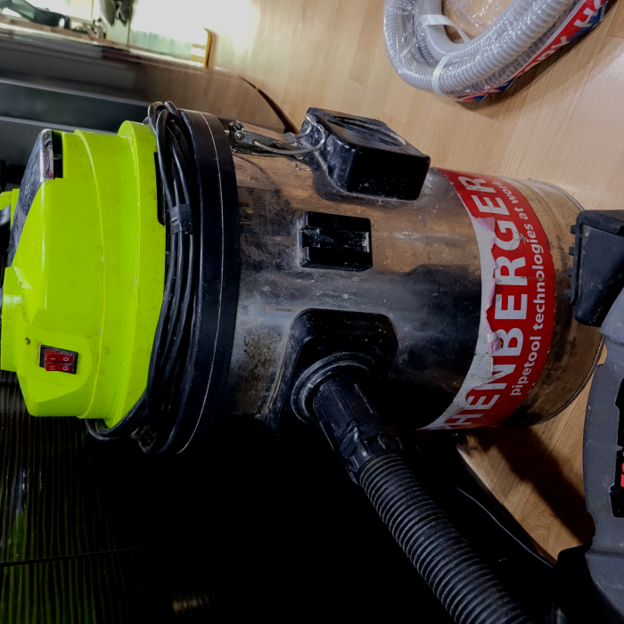
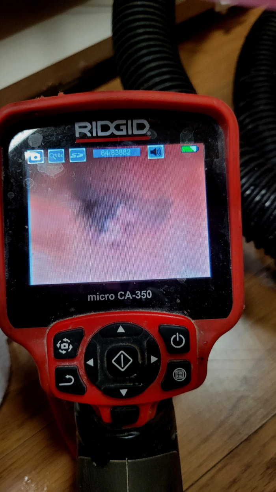
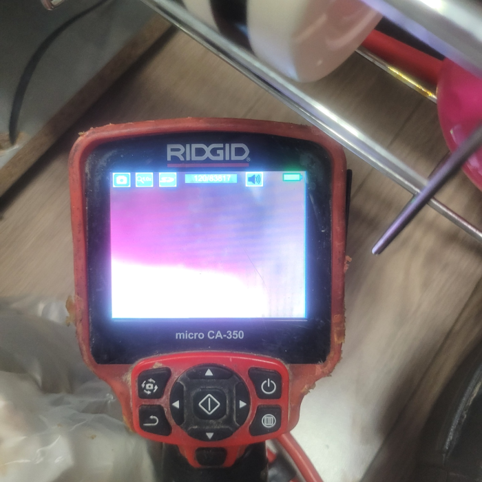
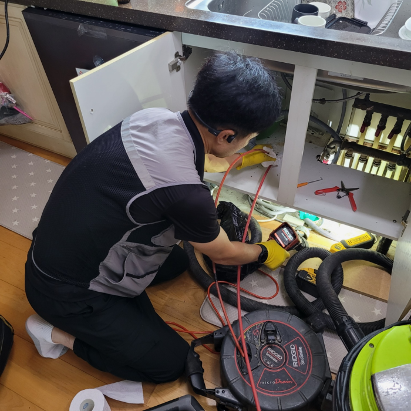
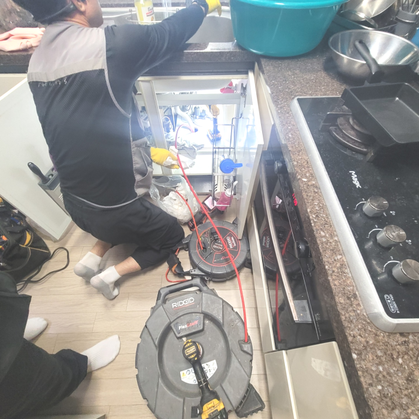

🏠 중랑구 면목동 씽크대막힘 상봉동 중화동 주방하수구역류 뚫는업체
용인 목동 싱크대막힘 전문 시공 후기

📋 작업 개요
- 위치: 용인 목동, 목동, 용인
- 서비스 유형: 싱크대막힘, 변기막힘, 하수구막힘, 배관막힘, 역류해결, 뚫는업체, 배관청소, 고압세척
- 작업 일시: 2024. 2. 25. 10:42
- 업체명: 하수구수사대 (010-5615-2118)
🔍 문제 상황
안녕하세요^^
설비전문업체 "하수구수사대"를 찾아주셔서 고맙습니다.
전문업체에 연락하는건 다소부담스러워 혼자 가능한 해결해보고 싶어 하수도를 뚫어보려고 시도하게 됩니다. 하지만 금방 해결되는 간단한 상황도 있지만 문제파악이 확실하게 안된다면 실패하거나 또 막히기 일쑤 입니다.
중랑구 면목동 씽크대막힘 상봉동 중화동 주방하수구역류 뚫는업체

🔎 원인 분석
💡 전문가 진단: 중랑구 면목동 씽크대막힘 상봉동 중화동 주방하수구역류 뚫는업체
배수구 안쪽에 이물질이 적을때에는 셀프로 처리를해도 훼손없이 눈으로볼수있는 곳까지는 쉽게 제거할수있어요. 반면에사태가 엄중할경우엔 자가로진행하는처치로는 나아지기 어렵죠. 구두주걱같은 기다란것들을 넣게된다면 배수구안쪽으로 흘려가서 잔해물질등과 뒤섞여서 더욱심각한문제로 번질수있죠.
전문가여도 내시경 기계가 없다면 배관이 무엇으로 막혔는지 정확하게 원인 규명을 해드릴 수 없어요. 원인을 알아야 뚫는 방법도 정해지니 장비도 꼭꼭 확인해 주세요.배수 내시경은 필수 장비랍니다!
배관막힘은 얼마나 비용이 들어갈지 모르기 때문에 고민되는 것은 당연합니다만, 시간이 흐를수록 들어가는 비용도 늘어나기 때문에 증상이 발견됐을 때 당장 고칠 생각이 없더라도 얼마나 심각한 것인지 견적 정도는 받아보시고 고려해 보시는 것이 좋습니다.
다세대 주택에서는 여러 세대의 사람들이 한 배관을 이용하는 곳인 만큼 불편함을 줄이기 위해서 배수문제를 빠른 해결을 하고자 현장으로 즉시 출동을 하였습니다. 이번 현장을 통해서 배관 막힘을 전문 업체에서는 어떻게 해결을 하게 되었는지를 알려드리도록 하겠습니다.
외부 이물질이 원인인 경우 눈으로 보이는 배관이 막힌 것인지 아니면 벽 안쪽의 문제인지를 정확하게 파악을 해서 해결을 해야 합니다. 퇴수 막힘은 전문 업체를 통해서 해결을 하시는 것이 필요하며 퇴수막힘이 발생을 하면 망설이지 마시고 전문 업체 쪽으로 연락해 주시기를 바랍니다.

🔧 작업 과정
막혀있던 부분을 뚫은 다음 다시 내시경 카메라 전용장비를 투입하여 확인해 보았습니다. 확실히 처음과 달리 깔끔한 배출구배관이 눈에 들어왔습니다. 이를 고객님께도 확인시켜 드렸습니다. 내시경 카메라 장비를 이용하면 고객님께서도 직접 문제 상황을 볼 수 있어 안심할 수 있습니다.
처음에는 단순한 퇴수구 막힘이라고 착각했다고 하셨는데요. 뚫어뻥을 사용해도 뚫리지 않자 시중에서 흔하게 파는 액상 제품을 부어 경과를 지켜보았다고 합니다. 하지만 설명서에 적힌 시간까지 대기하였으나 좋아지는 반응은 없었으며 오히려 제품을 사용한 이후로 더 물이 차오르고 심지어 원인 모를 이물질까지 올라와 눈살이 찌푸려졌다고 하셨습니다.
같은사례로 전문기사를 불러야한다면 가지고있는 배수구장비가 무엇인지 확인해보시는게좋습니다, 값싼 기계가아니기때문에 전부구비하지않는곳이 꽤많이있습니다
물을쓸수없는상태에서 무관심하신다면 상황이악화된답니다.배관막힘 의외로대부분의분들이 대충쓰다보면 알아서나아질거란 생각을하시고 내팽겨치시는데 이러한것은 옳지않은방법입니다
저희는 해결 작업을 하고 나면 대충 하는 것이 아닌, 고객의 요청에 따라 배출관내시경 카메라를 사용하여 세밀한 조사를 진행합니다. 만약 오수관 작업을 뺀 샤프트 시공이 필요하다면, 이를 거쳐 문제를 해결해 드립니다. 또한, 배출관 고압세척 외에도 배관 내부의 상태를 정확히 파악하기 위해 관로 탐지기를 사용하기도 합니다.
이른 아침 출동으로 오랜 시간이 걸리지 않고 고객님 댁의 문제를 시원하게 해결해 드렸습니다. 이렇게 출발이 좋은 하루는 더욱 저희 업체를 찾아주시는 고객님이 많은 하루인 것 같습니다. 배관막힘은 물론이고 싱크대막힘, 변기막힘 등의 원인으로 골머리를 앓고 계시다면? 더는 걱정하지 마시고 배관전문 장비를 보유한 전문적인 업체를 꼭 부르시길 바랍니다.
그리고 심각하게 오지요. 그럴 때에는 셀프 뚫음보다는 이렇게 배수 전문설비업체에 의뢰해서 확실하게 문제를 해결하는 게 결과도 좋고 문제없이 변기 사용을 할 수 있는 좋은 방법이랍니다.


✅ 작업 완료
밤이든 낮이든 근무 중이기에 언제가 됐든 간에 의뢰해 주세요. 직접 보지 않고선 정확한 금액 안내가 힘들겠지만 기준 금액만큼은 말씀 가능하니 여쭙고 싶은 상황이 있으실 경우에는 전화 주시면 되십니다.배출구가 막혀 대처하고 싶으시거나 상담을 원하실 경우 전화 걸어주세요
#하수구막힘 #하수구뚫음 #하수구역류 #씽크대막힘 #싱크대역류 #오수관막힘 #하수구청소 #욕실하수구막힘 #변기막힘 #하수구뚫는비용 #싱크대수리 #화장실막힘




⚠️ 주방 싱크대 배관 막힘 예방 수칙
- ✅ 기름기가 묻은 식기나 프라이팬은 설거지 전 키친타올로 반드시 기름때를 닦아내세요.
- ✅ 주기적으로 싱크대 개수대에 뜨거운 물을 가득 받아 한 번에 내려 배관 내부 기름을 씻어내세요.
- ✅ 배수구 거름망을 미세한 필터로 사용하시고 음식물 찌꺼기가 틈으로 새어 들지 않게 관리하세요.
- ✅ 베이킹소다와 식초를 뜨거운 물과 함께 일주일에 한 번씩 부어주면 배관 살균과 막힘 예방에 좋습니다.
💡 핵심 정리
- 확실한 장비 작업(내시경 점검 및 샤프트 스케일링)으로 원인을 뿌리 뽑습니다.
- 작업 후 1년 이내에 동일한 부위 재발 시 100% 무상 A/S 서비스를 보장합니다.
- 서울 · 경기 · 인천 전 지역에 24시간 언제든 긴급 출동할 수 있도록 항시 대기 중입니다.
❓ 자주 묻는 질문 (FAQ)
🚨 용인 목동 싱크대막힘 문제로 고민이신가요?
정확한 원인 진단과 확실한 시공으로 재발 없는 해결을 약속드립니다.
24시간 긴급 출동 | 서울 · 경기 · 인천 전지역 | 1년 내 재발 시 무상 A/S